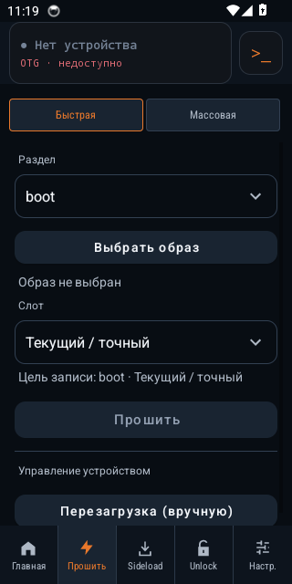

01
ADB и терминал
Shell, установка APK, Push/Pull и команды с телефона. Терминал сохраняет рабочее состояние при повороте.
ANDROID → ANDROID / USB OTG
Подключи два Android-устройства по USB OTG. Работай с прошивками, Recovery, файлами и терминалом — без компьютера.
Android 8.0+ · USB-host на первом телефоне · Root на хосте не нужен
● v6.0.0-alpha12 · Релиз подписан
Quick / Mass FlashИНСТРУМЕНТЫ
Прямой доступ к ADB, Fastboot и Recovery с полными журналами операций.
Shell, установка APK, Push/Pull и команды с телефона. Терминал сохраняет рабочее состояние при повороте.
Выбор раздела и образа, очередь прошивки, перезагрузки и работа с A/B и устройствами без слотов.
Выбери ZIP, проверь выбор и отдельно запусти отправку. Выбранный файл можно очистить, не удаляя сам архив.
ADB Pull с устойчивыми контрольными точками. После переподключения можно продолжить перенос с итоговой сверкой SHA-256.
Журналы ADB, Fastboot и операций в едином диагностическом ZIP. Отдельные копии для обмена не меняют исходные логи.
Вход в Mi Account и процесс разблокировки. Авторизация проверена; для финального unlock текущей версии нужны добровольцы.
ПРОВЕРЕНО НА ПРАКТИКЕ
Форматирование и загрузку Android проверили на разблокированном POCO X3 Pro. Результаты привязаны к конкретным устройствам и прошивкам.
Аппаратные результаты на GitHubНа POCO F7 / onyx возможны плавающие ошибки приёма USB в роли хоста. Возобновление Pull помогает сохранить прогресс; причина совместимости пока не установлена.
НУЖНЫ ТЕСТИРОВЩИКИ
Если ты уже собираешься разблокировать свой Xiaomi, Redmi или POCO, помоги проверить полный процесс NekoFlash 2.0 на аппарате с заблокированным загрузчиком.
Вход в Mi Account и обнаружение Fastboot проверены. Реальный переход текущей версии в состояние unlocked ещё требует аппаратного подтверждения.
Разблокировка может стереть пользовательские данные. Условия, разрешения аккаунта и ожидание определяет Xiaomi.
СКАЧАТЬ
Скачивай подписанный APK из GitHub Releases. Код приложения открыт; диагностические и тестовые сборки отделены от релиза.
Все релизы и измененияf5013cb895d11f7c42272075eb384e0b0bbc9d1fa3d537321504fbd01499e53bВ релизе также доступен архив исходников встроенных filesystem tools.
ВОПРОСЫ
Компьютер не нужен. NekoFlash устанавливается на Android 8.0+ с поддержкой USB-host/OTG. Root на телефоне-хосте не требуется; доступные операции на целевом устройстве зависят от его режима и состояния загрузчика.
Два Android-устройства и подходящий USB OTG-кабель или переходник. Для ADB разреши отладку на целевом телефоне; для Fastboot и Recovery переведи его в соответствующий режим.
Сервис Xiaomi определяет доступность разблокировки, привязку аккаунта и срок ожидания. NekoFlash не обещает обход этих условий. Для текущей версии мы отдельно собираем результаты реальной разблокировки.
Укажи версии NekoFlash и Android, модели хоста и целевого устройства, действие и результат. Приложи штатный диагностический ZIP в Telegram или GitHub Issues. Подробности об экспорте есть в политике конфиденциальности.
Исходники, задачи, история изменений и результаты тестирования — открыто.